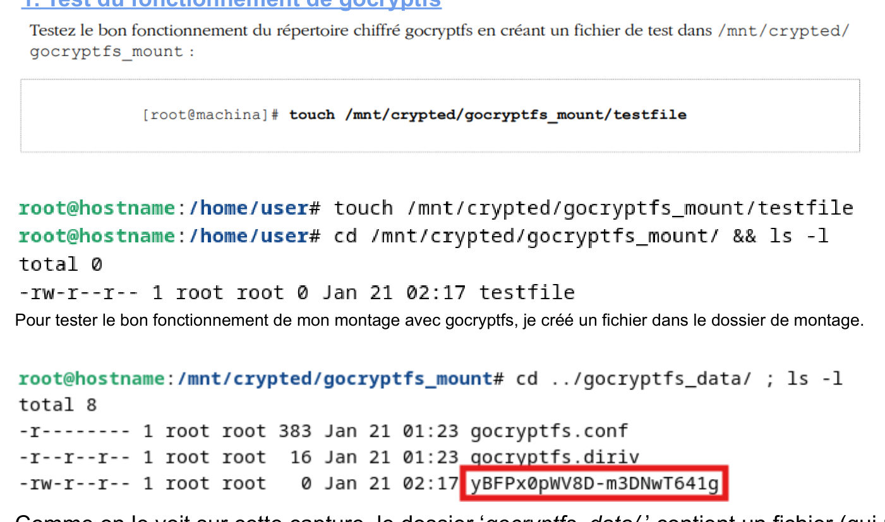
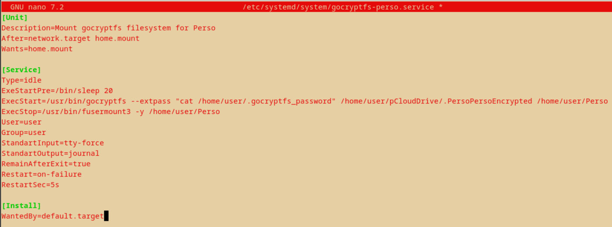
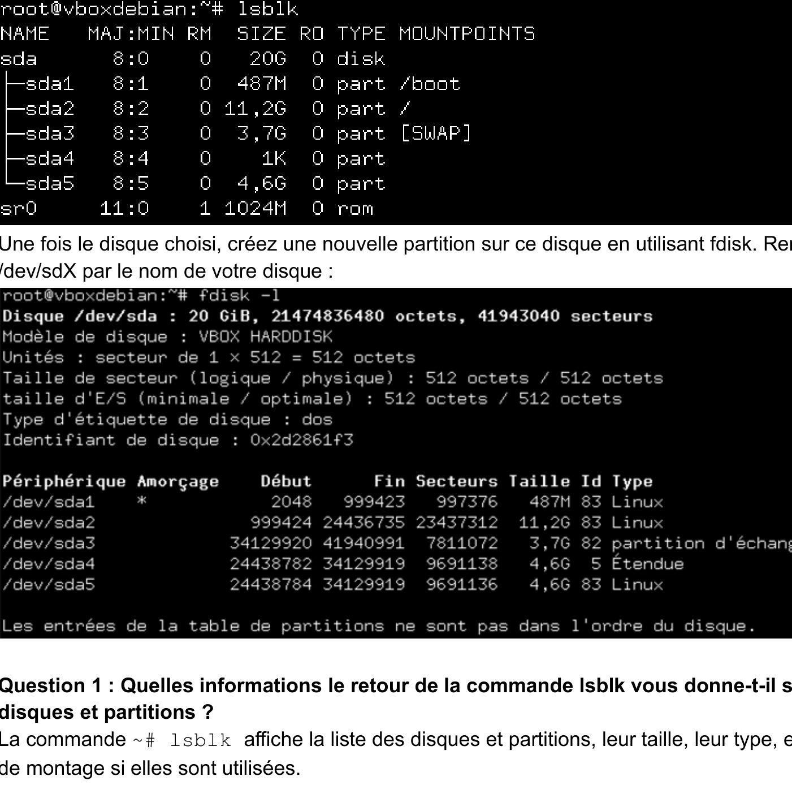
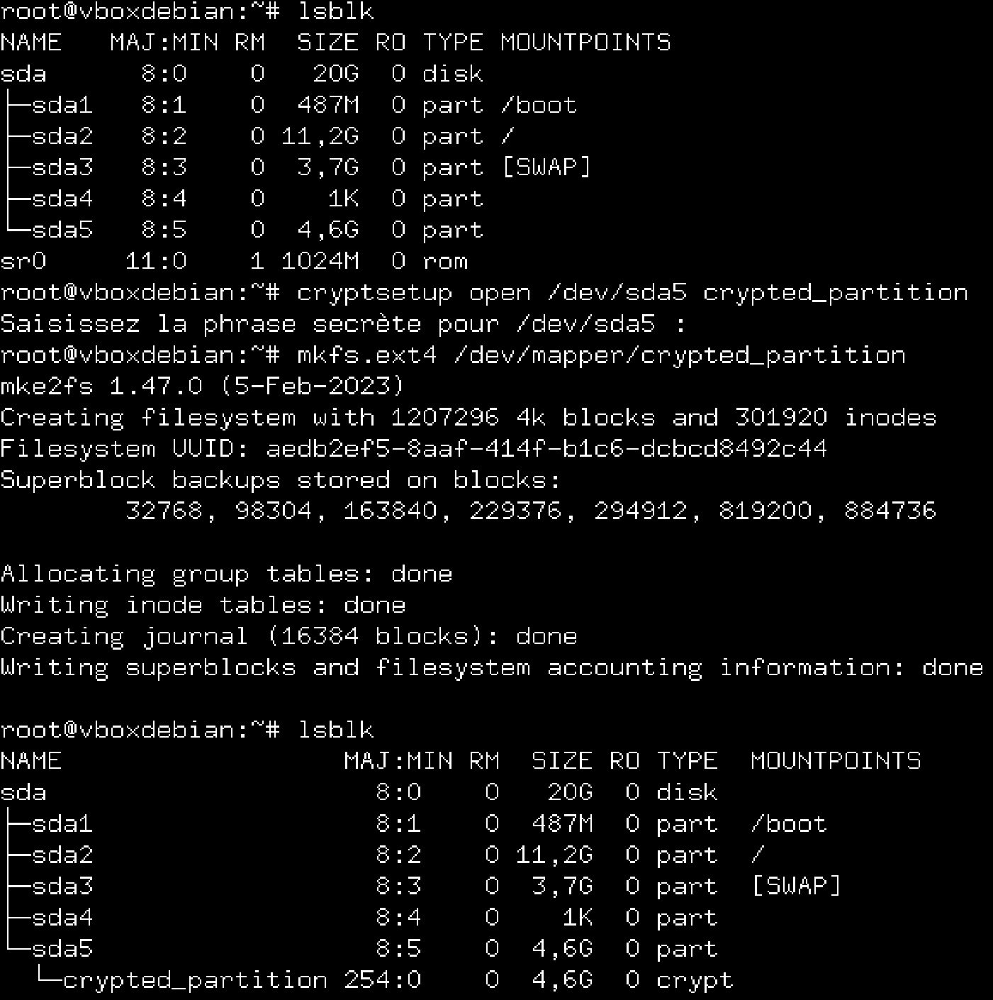
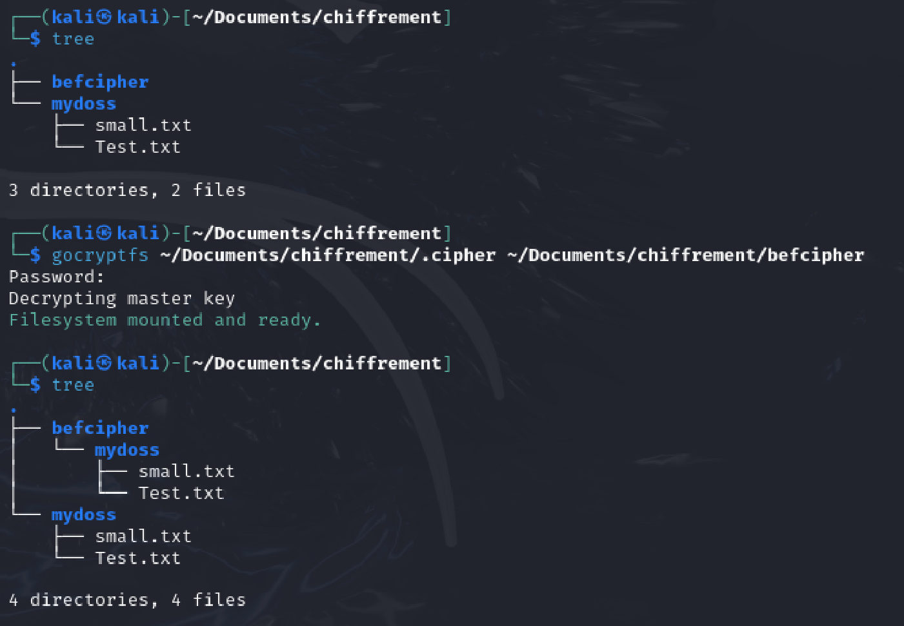

Traiter des données : chiffrement sous Debian
Trois TP pour protéger des données sous Linux : un dossier chiffré synchronisé dans le cloud, une partition chiffrée LUKS, puis un double chiffrement.
Équipe : Projet en trio : ABDOU Imane, BARET Alix, HOUMADI Soirihi

Contexte et objectif
Contexte
Protéger des données sensibles ne se limite pas à un mot de passe : il faut chiffrer le stockage, automatiser le déverrouillage et savoir diagnostiquer les problèmes.
Objectif
Configurer gocryptfs et LUKS sous Debian, automatiser leur montage au démarrage avec systemd, crypttab et fstab, puis tester, vérifier et dépanner la configuration.
Ma mission
Mon rôle
Projet réalisé à trois, chacun reproduisant les manipulations sur sa machine. Nous avons :
- Mis en place un répertoire chiffré gocryptfs synchronisé avec pCloud et monté automatiquement par un service systemd
- Créé, chiffré (LUKS) et formaté en ext4 une partition, avec montage automatique via
/etc/crypttabet/etc/fstab - Combiné les deux méthodes : un répertoire gocryptfs à l'intérieur d'une partition LUKS
- Répondu aux questions de compréhension et rédigé le compte rendu commun
Travaux réalisés
TP1 · gocryptfs + pCloud
Installation, initialisation du répertoire chiffré, fichier de mot de passe protégé (chmod 600) et service systemd avec redémarrage en cas d'échec.
Variante tolérante aux erreurs
Script de saisie du mot de passe au démarrage : le système continue de démarrer même si le mot de passe est incorrect (Restart=on-failure, StartLimitBurst).
TP2 · Partition LUKS
Création de la partition, cryptsetup luksFormat/open, formatage ext4, UUID dans crypttab et fstab, tests de permissions puis cryptsetup close.
TP3 · Double chiffrement
Répertoire gocryptfs créé dans une partition déjà chiffrée par LUKS, puis vérification que les fichiers apparaissent bien chiffrés.
Vérification et dépannage
Analyse des journaux (journalctl), contrôle des montages (lsblk, mount | grep gocryptfs).
Outils et technologies
Illustrations du projet
Images extraites du rapport. Cliquez pour agrandir.
testfile créé dans le point de montage apparaît sous un nom chiffré dans le dossier de données.

lsblk et fdisk.
/dev/mapper.
Difficultés et solutions
fdisk était introuvable alors qu'elle était installée.$PATH et ajout des dossiers sbin avec export.syslog et kern.log attendus n'existent plus sur les Debian récentes.journalctl filtré sur le service ou sur cryptsetup.df -h n'affiche pas le montage gocryptfs (FUSE) et le démontage échouait.mount | grep gocryptfs ; fermeture du terminal ouvert dans le point de montage avant umount.Résultats obtenus
- Répertoire chiffré monté automatiquement au démarrage
- Partition LUKS déverrouillée au boot puis verrouillée à la demande
- Double chiffrement fonctionnel : les noms et contenus des fichiers sont illisibles sans la clé
Compétences développées
Compétences
- Administration système Linux
- Chiffrement des données au repos
- Automatisation avec systemd
- Diagnostic méthodique à partir des journaux
Ce que ce projet m'a apporté
Ce projet m'a appris à être autonome face aux erreurs système : lire les journaux, comprendre la cause et adapter la procédure plutôt que de la suivre à l'aveugle.
Envie d'aller plus loin ?
Le document complet détaille toutes les configurations, mesures et analyses.